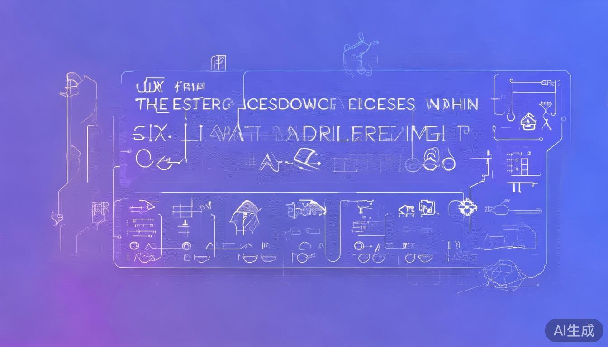

数学建模入门
面向工科生与竞赛入门者的数学建模（Mathematical Modeling）讲义。 覆盖：什么是建模 建模流程 常用模型分类 国赛/美赛简介 一个完整微分方程建模例子。
一、什么是数学建模
数学建模，就是用数学的语言（方程、函数、图、概率……）去描述和解决现实问题。
现实问题是模糊、复杂、多因素的；数学建模要做的，是在合理的简化下，把关键因素"翻译"成数学对象，用数学方法求解，再把结果"翻译"回现实检验。
一句话：数学建模 = 现实问题 数学问题 的双向翻译过程。
它与"做数学题"的最大区别是：
| 做数学题 | 数学建模 |
|---|---|
| 题目已抽象好，条件齐全 | 问题模糊，条件要自己找、自己取舍 |
| 答案唯一、精确 | 答案不唯一，只有"更好"没有"最好" |
| 考计算能力 | 考抽象、简化、检验、表达的综合能力 |
二、建模流程（六步法）

经典流程是一条可回溯、可迭代的链，任何一步发现问题都要回头修正。
1. 问题分析（Problem）
搞清楚要回答什么：目标是什么、约束是什么、有哪些数据可用。
常见误区：一上来就急着列公式，结果建了个"正确但答非所问"的模型。
2. 模型假设（Assumptions）
这是建模的灵魂。现实太复杂，必须抓住主要矛盾、忽略次要因素：
- 假设要合理（有依据）且必要（能简化）；
- 假设要写清楚，因为后续检验和报告都围绕假设展开；
- 假设过多 模型失真；假设过少 模型不可解。在"够用"与"可解"之间找平衡。
3. 模型建立（Modeling）
用数学结构把变量、关系、规律组织起来：
- 选择模型类型（微分方程？优化？统计？……，见第三节）；
- 写出方程、目标函数、约束条件；
- 定义清楚符号和量纲。
4. 模型求解（Solving）
- 解析求解（能解则解）；
- 数值求解（本 lab 的
numerical/脚本就是为此准备的：牛顿法、RK4、数值积分……）； - 计算机模拟（蒙特卡洛、仿真）。
5. 模型检验（Validation）
没有检验的模型不是模型，只是公式。
- 用已知数据/特例检验：结果是否合理、量纲是否对、边界情况是否退化正确；
- 与实际数据/实验对比，算误差；
- 灵敏度分析：改变参数看结果是否稳定，找出关键参数；
- 不通过 回到步骤 2 改假设或步骤 3 改模型。
6. 模型报告（Report）
清晰表达：问题重述 假设 模型 求解 检验 结论与改进。竞赛中报告就是最终成果。
问题 假设 建模 求解 检验 ──不通过── 修改假设/模型
│
通过
报告
三、常用模型分类
| 类别 | 适用问题 | 典型模型/方法 | 数学工具 |
|---|---|---|---|
| 微分方程模型 | 随时间/空间连续变化的过程 | 传染病 SIR、人口增长、热传导、振动、电路 | 常/偏微分方程，RK4 等数值解 |
| 优化模型 | 在约束下求最好方案 | 线性规划、整数规划、非线性规划、动态规划 | 单纯形法、梯度法、拉格朗日乘子 |
| 统计/概率模型 | 数据驱动、含随机性 | 回归、时间序列、假设检验、贝叶斯 | 概率论、数理统计、机器学习 |
| 图论/网络模型 | 对象之间的关系 | 最短路、最小生成树、最大流、PageRank | 图论、组合优化 |
| 蒙特卡洛模型 | 难以解析、可随机模拟 | 求积分、排队、风险评估、π 的估计 | 随机数、大数定律、抽样 |
实际竞赛/工程中常混合使用：比如"传染病 + 优化疫苗分配"，就是微分方程模型和优化模型的组合。
四、国赛与美赛简介
1. 全国大学生数学建模竞赛（CUMCM，"国赛"）
- 主办：中国工业与应用数学学会；每年 9 月左右，3 天 3 夜（72 小时）。
- 形式：3 人一队，从 A/B/C（本科）题中选一题，提交一篇论文。
- 赛题方向：工程、经济、管理、社会问题，近年偏重大数据与跨学科。
- 奖项：省奖、国奖（一/二等奖）。是工科生含金量很高的竞赛之一。
2. 美国大学生数学建模竞赛（MCM/ICM，"美赛"）
- 主办：COMAP；每年 1~2 月，4 天（96 小时）。
- 形式：3 人一队，6 题选 1，提交英文论文。
- 题型：MCM（A 连续型、B 离散型、C 数据型）+ ICM（D 运筹、E 环境、F 政策）。
- 奖项：Successful Participant、Honorable Mention（H 奖）、Meritorious（M 奖）、Finalist（F 奖）、Outstanding（O 奖）。
3. 竞赛要点
- 队友搭配：建模 + 编程 + 写作 三人分工；
- 工具链：Python（NumPy/SciPy/Matplotlib）、MATLAB、LaTeX/Word 写论文；
- 制胜关键是清晰的思路 + 可检验的模型 + 完整的论文，而不是花哨的算法堆砌。
五、完整小例子：传染病传播的 SIR 模型（微分方程建模）
问题
一种传染病在一个封闭人群（总人数 N，无出生死亡、无流动）中传播，想预测感染者人数随时间的变化，以及疫情最终会感染多少人。
第 1 步：问题分析
关心的是 易感者 S、感染者 I、康复者 R 三类人群数量的动态变化。
第 2 步：模型假设
- 总人口不变：
S + I + R = N（常数）； - 感染者与易感者均匀混合，单位时间每个感染者接触并传染
β·S个易感者； - 感染者以速率
γ康复并获得免疫（不再被感染）； - 忽略潜伏期、出生、死亡、人口流动。
第 3 步：模型建立（SIR 模型）
dS/dt = -β·S·I （易感者因接触感染而减少）
dI/dt = β·S·I - γ·I （新增感染 减去 康复）
dR/dt = γ·I （康复者增加）
初值：S(0)=S0, I(0)=I0, R(0)=0
关键量 基本再生数 R0 = β·S0 / γ：它表示一个感染者平均传染多少人。
R0 > 1疫情扩散；R0 < 1疫情自然消退。
第 4 步：模型求解（用本 lab 的 RK4 数值方法）
SIR 是一组耦合的非线性 ODE，一般没有初等解析解，用四阶龙格-库塔法数值求解。核心思路与 numerical/02_runge_kutta.py 完全一致，只是把标量 y 换成向量 (S, I, R)：
import math
def sir_derivs(state, beta, gamma, N):
"""返回 (dS/dt, dI/dt, dR/dt)"""
S, I, R = state
dS = -beta * S * I / N
dI = beta * S * I / N - gamma * I
dR = gamma * I
return (dS, dI, dR)
def rk4_sir(state0, beta, gamma, N, h, n_steps):
"""向量形式的四阶龙格-库塔，求解 SIR 模型"""
S, I, R = state0
history = [(0.0, S, I, R)]
for k in range(n_steps):
def f(state): # 统一封装为 f(state) -> 导数向量
return sir_derivs(state, beta, gamma, N)
# 计算 4 个斜率（每个都是三元组）
k1 = f((S, I, R))
k2 = f((S + h/2*k1[0], I + h/2*k1[1], R + h/2*k1[2]))
k3 = f((S + h/2*k2[0], I + h/2*k2[1], R + h/2*k2[2]))
k4 = f((S + h*k3[0], I + h*k3[1], R + h*k3[2]))
S = S + h/6*(k1[0] + 2*k2[0] + 2*k3[0] + k4[0])
I = I + h/6*(k1[1] + 2*k2[1] + 2*k3[1] + k4[1])
R = R + h/6*(k1[2] + 2*k2[2] + 2*k3[2] + k4[2])
history.append(((k+1)*h, S, I, R))
return history
if __name__ == "__main__":
N = 10000.0 # 总人口
beta = 0.3 # 传染率
gamma = 0.1 # 康复率（平均病程 1/gamma = 10 天）
S0, I0, R0 = 9990.0, 10.0, 0.0
R_naught = beta * S0 / (gamma * N)
print(f"基本再生数 R0 = {R_naught:.3f}")
hist = rk4_sir((S0, I0, R0), beta, gamma, N, h=0.1, n_steps=2000)
# 打印几个关键时间点的结果
print(f"{'t':>6} {'S':>10} {'I':>10} {'R':>10}")
for t, S, I, R in hist[::200]: # 每 200 步(20天)取一次
print(f"{t:>6.0f} {S:>10.0f} {I:>10.0f} {R:>10.0f}")
# 最终疫情规模
_, S_end, I_end, R_end = hist[-1]
print(f"\n疫情结束时：康复者 R = {R_end:.0f}，占比 {R_end/N:.1%}")
这段代码可以直接存成
sir_model.py用python sir_model.py运行，结果会显示：R0 = 3.0 > 1，疫情扩散，最终大部分人口被感染后康复。
第 5 步：模型检验
- 量纲检查：S、I、R 始终非负且总和恒等于 N；
- 退化特例：若
β = 0（不传染），感染人数应指数衰减I(t)=I0·e^{-γt}，与解析解一致； - 灵敏度：改变
β、γ观察R0和最终感染规模的敏感性——R0是关键控制量； - 与现实对照：与真实疫情曲线比较，若不吻合则回到假设（如加入潜伏期 E SEIR 模型、加入人口流动）。
第 6 步：报告
按六步流程写出：问题 假设 模型 求解 检验 结论（如"降低传染率 β 或加快康复 γ，使 R0<1 即可控制疫情"）。
这个例子完整展示了一条建模链：物理直觉（三类人 + 传染机理） 微分方程 数值求解（RK4） 检验 结论。工科中的"水库水位""RC 电路充放电""弹簧阻尼振动"等，思路完全同构。
六、给初学者的三条建议
- 从抄模型开始：先读懂、复现经典模型（SIR、Logistic 人口、最短路），再谈创新。
- 假设是命门：写论文时"模型假设"这一节比"模型"本身更能体现水平。
- 一切以检验收尾：建模不是"列完方程就完事"，而是"结果能不能解释现实、经不经得起质疑"。
本文档与 ../numerical/ 目录配套：数值方法是模型求解的核心工具。